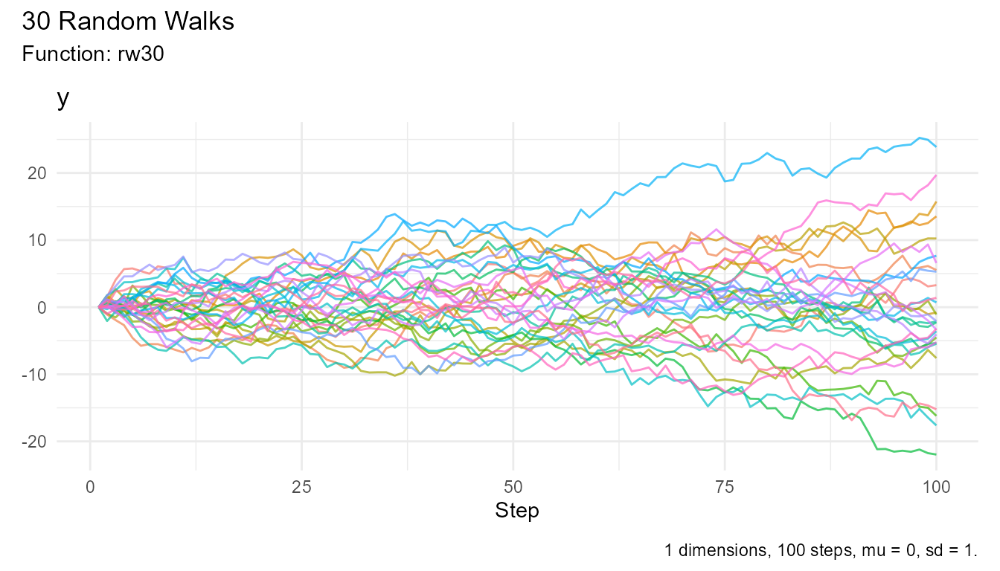

library(RandomWalker)
#>
#> == Welcome to RandomWalker ========================================================
#> If you find this package useful, please leave a star:
#> https://github.com/spsanderson/RandomWalker
#>
#> If you encounter a bug or want to request an enhancement please file an issue at:
#> https://github.com/spsanderson/RandomWalker/issues
#>
#> Thank you for using RandomWalkerRandom Walks
What is a random walk? A random walk is a mathematical concept describing a path consisting of a succession of random steps. Each step is independent of the previous ones, and the direction and distance of each step are determined by chance. The simplest form of a random walk is a one-dimensional walk, where an object moves either forward or backward with equal probability at each step.
In a random walk, the average position of the object after steps is zero, but the average of the square of the distance from the starting point is , meaning the object is typically about steps away from the start after steps. This concept is widely used in various fields, including physics, economics, and computer science, to model phenomena such as particle diffusion, stock price movements, and network topology.

In finance, the random walk theory suggests that stock prices move unpredictably, making it impossible to predict future prices based on past movements. This theory underpins the Efficient Market Hypothesis, which posits that all available information is already reflected in stock prices, thus making it impossible to consistently outperform the market.

In higher dimensions, random walks exhibit complex geometric properties and can be used to model more intricate systems, such as the behavior of particles in a fluid or the structure of networks.
By understanding random walks, researchers can gain insights into various stochastic processes and their applications across different scientific and practical domains.
Now that we have a basic understanding of these concepts, let’s
explore how we can create and visualize random walks using the
RandomWalker package in R.
Installation
You can install the released version of RandomWalker
from CRAN with:
install.packages("RandomWalker")You can install the development version of RandomWalker
from GitHub
with:
# install.packages("devtools")
devtools::install_github("spsanderson/RandomWalker")Example Usage
Let’s start by generating a simple random walk using the
rw30() function from the RandomWalker package.
This function generates a random walk with 30 steps.
rw30() |>
head(10)
#> # A tibble: 10 × 3
#> walk_number step_number y
#> <fct> <int> <dbl>
#> 1 1 1 0
#> 2 1 2 -1.40
#> 3 1 3 -1.14
#> 4 1 4 -3.58
#> 5 1 5 -3.59
#> 6 1 6 -2.97
#> 7 1 7 -1.82
#> 8 1 8 -3.64
#> 9 1 9 -3.89
#> 10 1 10 -4.13The output shows the first 10 steps of the random walk. Each step
represents the position of the object after moving forward or backward
by one unit. The rw30() function takes no parameters and
generates 30 random walks with 100 steps. It uses the
rnorm() function to generate random numbers from a normal
distribution with mean 0 and standard deviation 1.
Attributes
Each function in the RandomWalker package has attributes
that can be accessed using the attributes() function. For
example, let’s look at the attributes of the rw30()
function:
atb <- attributes(rw30())
atb[!names(atb) %in% c("row.names")]
#> $names
#> [1] "walk_number" "step_number" "y"
#>
#> $class
#> [1] "tbl_df" "tbl" "data.frame"
#>
#> $num_walks
#> [1] 30
#>
#> $num_steps
#> [1] 100
#>
#> $mu
#> [1] 0
#>
#> $sd
#> [1] 1
#>
#> $fns
#> [1] "rw30"
#>
#> $dimension
#> [1] 1Visualizing Random Walks
To visualize the random walk generated by the rw30()
function, we can use the visualize_walks() function. This
function creates a line plot showing the path of the random walk over
time.

The plot shows the path of the random walk over time, with the x-axis representing the number of steps and the y-axis representing the position of the object. The random walk exhibits a random pattern of movement, with the object moving forward and backward in a seemingly unpredictable manner.
Future Direction
As of now RandomWalker only supports 1-dimensional
random walks. In the future, we plan to extend the package to support
higher-dimensional random walks and provide additional functionalities
for analyzing and visualizing random walks in various contexts.
We hope this vignette has provided you with a basic understanding of
random walks and how to use the RandomWalker package in R.
If you have any questions or feedback, please feel free to reach out to
us.